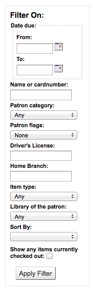
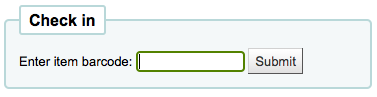
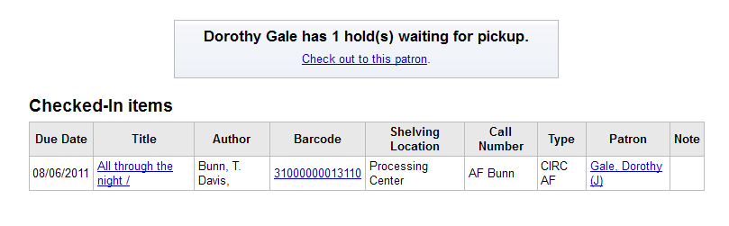

流通
到達那裡： 更多 > 管理 > 整體系統偏好 > 流通
論文請求
ArticleRequests
詢問：___ 讀者搜尋您的權威記錄。
預設值：停用
值：
停用
啟用
說明：
此偏好控制讀者是否可以請求文章。
這是：ref：`文章請求<文章-請求-流通-標籤>`功能的主要開關。
ArticleRequestsLinkControl
詢問：___ 在搜尋結果顯示論文連結。
預設：以演算法顯示或隱藏
值：
總是顯示
以演算法顯示或隱藏
說明：
在 OPAC 結果頁面，顯示 ‘請求論文’ 連結，或在顯示連結前，先檢查分館、讀者與館藏類型以決定該論文是否可從該記錄取得。
ArticleRequestsMandatoryFields
詢問：紀錄層次或館藏層次的請求表單，把下列欄位列為必備: ___
預設值：全部不選
值：
[全選]
作者
章節
日期
期
頁
標題
卷
說明：
此偏好控制紀錄層次與館藏層次論文請求表單的必備欄位。選取 [全選] 表示所有欄位 (著者、章、日期、期、頁、題名、卷) 都是必備。
ArticleRequestsMandatoryFieldsItemsOnly
詢問：只申請館藏層次的紀錄，使用以下的必備欄位: ___
預設值：全部不選
值：
[全選]
作者
章節
日期
期
頁
標題
卷
說明：
此偏好祗控制館藏層次論文請求表單的必備欄位。選取 [全選] 表示所有欄位 (著者、章、日期、期、頁、題名、卷) 都是必備。
ArticleRequestsMandatoryFieldsRecordOnly
詢問：只申請紀錄層次的紀錄，使用以下的必備欄位: ___
預設值：全部不選
值：
[全選]
作者
章節
日期
期
頁
標題
卷
說明：
此偏好祗控制紀錄層次論文請求表單的必備欄位。選取 [全選] 表示所有欄位 (著者、章、日期、期、頁、題名、卷) 都是必備。
ArticleRequestsOpacHostRedirection
詢問：___當子級在OPAC上請求文章時沒有館藏，根據MARC21 773$w從子級重定向到主機。
預設值：停用
值：
停用
啟用
說明：
啟用後，如果讀者嘗試從分析記錄提出文章請求，系統將使用主機記錄中的數據自動填充請求中的一些詳細訊息。
ArticleRequestsSupportedFormats
詢問：支援以下文章請求格式：___
預設：影印
值：目前有效的選擇是影印和掃描
說明：
此系統偏好控制了在提交文章請求時 ‘格式’ 下拉選單中的可用選項。
有效的選擇是影印和掃描。
使用豎線(|)分隔選項，例如影印|掃描
清單中的第一個選項將是文章申請表中的預設選項。
批次借出
BatchCheckouts
詢問：___ 批次借出
預設：不允許
值：
允許
不允許
說明：
此系統偏好是 :ref:`批次借出<batch-checkouts-label>`功能的主要開關
Make sure to add the patron categories allowed to have batch checkouts in BatchCheckoutsValidCategories
參見：
BatchCheckoutsValidCategories
詢問：允許批次借出的讀者類別：___
預設值：無
價值: 讀者類別
說明：
檢查允許批次借出的讀者類別
BatchCheckouts must be enabled for this preference to have any effect
參見：
還入政策
AutomaticConfirmTransfer
Asks: ___ automatically confirm a transfer when the modal is dismissed without clicking ‘Yes’.
預設值：不要
值：
不要
做
說明：
This system preference is used to control the transfer behavior when a staff member clicks away from the transfer confirmation pop-up.
When set to “Don’t”, clicking away from the pop-up will leave the item as is.
When set to “Do”, clicking away from the pop-up will confirm the transfer and put the item in transit.
It is only possible to click away from the pop-up if the TransfersBlockCirc system preference is set to “Don’t block”.
BlockReturnOfLostItems
詢問：___ 還入遺失的館藏。
預設：不阻止
值：
封鎖
不封鎖
說明：
此偏好控制被標記為遺失的館藏 (MARC21 欄位 952$1)，是否仍允許還入與借出。
BlockReturnOfWithdrawnItems
詢問：___ 還入被註銷的館藏。
預設值：不允許
值：
封鎖
不封鎖
說明：
此偏好控制被標記為註銷的館藏 (在 MARC21 欄位 952$0)，是否仍允許還入與借出。
CalculateFinesOnBackdate
詢問：___ 計算並更新帶有追溯返回日期的館藏時的逾期費用。
預設值：要
值：
做
不要
說明：
This system preference is similar to CalculateFinesOnReturn but is used when checkins are backdated either through the book drop mode or the specified return date (see SpecifyReturnDate).
CalculateFinesOnReturn
詢問：___ 還入時，計算並更新罰款。
預設值：要
值：
做
不要
說明：
若將此偏好設為 “要”，且將 罰款工作排程 關閉，則祗在還入時，Koha 才計算罰款。若將此偏好設為 “要”，且將罰款排程開啟，則依罰款排程計算 (通常是半夜)，並且在還入時，再計算一次。依小時計算的罰款，比較適用。若將此偏好設為 “不要”，且將罰款排程關閉，則必須在執行罰款排程時，才能計算出應付罰款。
警告
以小時計算罰款時，這應該設定為 ‘要’。
警告
The finesMode system preference must be set to ‘Calculate and charge’ in order for this system preference to have any effect.
HidePersonalPatronDetailOnCirculation
詢問：___ 在流通頁面隱藏讀者電話號碼、電子郵件、街道地址及城市名稱
預設值：不要
值：
不要
做
說明：
This preference controls the display of the patron’s phone number, email address, and physical address from the left side of the screen (under their picture, if they have one) on the circulation page.
當設定為 ‘做’ 之後，這些資訊將只會顯示在讀者詳情頁面。
HoldsAutoFill
詢問：___ 自動預約不必詢問圖書館員。
預設值：不要
值：
做
不要
說明：
If set to ‘Do’, the holds confirmation pop-up will not appear upon checking in an item placed on hold.
HoldsAutoFillPrintSlip
問：___ 自動顯示預約收條對話。
預設值：不要
值：
做
不要
說明：
If set to ‘Do’, the holds slip print pop-up will appear automatically upon checking in an item placed on hold.
HoldsAutoFill must be set to ‘do’ for this preference to have any effect.
HoldsNeedProcessingSIP
詢問：如果通過 SIP 協定返回匹配項，___ 將自動保留。
預約：執行
值：
執行
不執行
說明：
此系統偏好控制預約是否由通過 SIP（分類器、自動還入站等.）還入的館藏自動填補。
SkipHoldTrapOnNotForLoanValue
要求：不要用 “不可借出 “值為___的館藏來填補預約。
說明：
此系統偏好用於從填補預約中完全排除具有“非借出”值的館藏。
輸入 不是_借出 容許值，用豎線(|)分隔。
StoreLastBorrower
詢問：向最後借出館藏的讀者 ___ 還回館藏。
預設：不儲存
值：
不儲存
儲存
說明：
即使讀者選擇其設定匿名借出記錄，經由此偏好仍可儲存讀者最後一筆借出資訊。
备注
This setting is independent of opacreadinghistory and AnonymousPatron.
TransfersBlockCirc
要求：___ 館員在觸發轉移時不要繼續還入館藏。
預設值：不允許
值：
不封鎖
封鎖
說明：
此系統偏好控制轉移彈出窗口是否阻止進一步還入。
If this is set to “Don’t block”, the AutomaticConfirmTransfer system preference determines what happens if the pop-up is dismissed without confirming the transfer.
TrapHoldsOnOrder
要求：___ 沒有借出但可以持有的館藏（notforlan < 0）來填補預約。
預設：陷阱
值：
不要陷阱
陷阱
說明：
此系統偏好控制 a 非_借出 容許值 小於 0 的館藏（這意味著該館藏可以預約，但不能借出）是否應該是用於填補預約。
UpdateItemLocationOnCheckin
詢問：這是成對的容許值。第一個值之後為冒號、空格，才是第二個值。
說明：
此系統偏好影響還入館藏，現在及永久的位置 (不論借出與否)。
若館藏值在冒號 (:) 的左方對應至館藏現在位置，將更新其位置值於冒號 (:) 的右方。
LOC 的值是 容許值。
還入時，’STAFF: GEN’ 將把館藏從館員工作區移至普通書庫。
特定術語
PROC：處理中心。使用 PROC 時，只有現在位置受影響。
推車: 歸架書車。使用推車時，只有現在位置受影響。
_PERM_：使用館藏的永久位置，不論現在的位置為何。
- _BLANK_：用於左側做為第一個值，將加入位置
沒有。用於右側做為第二個值，將移除位置。
_ALL_：用於左側做為第一個值，將影響所有館藏及取代其他規則。
警告
需要 YAML 語法才能運作
這表示
確認在第一個值與冒號之間，沒有空格
確認在第一個值與冒號之間，存在一個空格
確認每組都在同一列中
如果使用 PROC 或 CART，請使用 cart_to_shelf 程序作業 在確定的小時數後將館藏還入到它們的常設位置。
UpdateNotForLoanStatusOnCheckin
問：這是一個值對清單。 還入館藏時，如果左邊的非借出與館藏的非借出值相匹配，它將被更新為右邊的值。
說明：
此系統偏好會影響單冊的’不借出’狀態，當單冊還入時（無論是否已借出）。
如果冒號 (:) 左邊的狀態值與館藏的目前狀態匹配，它將被更新為與冒號（:）右邊的狀態值匹配。
這些值是 NOT_LOAN 容許值。
例如，’-1: 0’ 將導致設定為 ‘已訂購’ 的館藏現在可以借出
This system preference can also be used to only display the not for loan status. To do so, enter
ONLYMESSAGEon the right of the colon. For example-1: ONLYMESSAGE
This will simply show the label for -1 without changing the status.
警告
需要 YAML 語法才能運作
這表示
確認在第一個值與冒號之間，沒有空格
確認在第一個值與冒號之間，存在一個空格
確認每組都在同一列中
Checkout policy
AgeRestrictionMarker
詢問：限制部份讀者借出不適宜的館藏：___
說明：
This preference defines certain keywords that will trigger Koha to restrict checkout based on age. These restrictions can be overridden by the AgeRestrictionOverride preference. Enter in this field a series of keywords separated by bar (|) with no spaces. For example PG|R|E|EC|Age| will look for PG followed by an age number, R folllowed by an age number, Age followed by an age number, and so on. These values can appear in any MARC field, but Library of Congress recommends the 521$a (Target Audience Note). Whatever field you decide to use you must map the word agerestriction in the biblioitems table to that field in the Koha to MARC Mapping. When cataloging you can enter values like PG 13 or E 10 in the 521$a and Koha will then notify circulation librarians that the material may not be recommended for the patron based on their age.
重要的
必須在館藏表內，把年齡限制對映至 MARC 欄位，此資訊才會顯示在 Koha 對映至 MARC 管理區塊。
AgeRestrictionOverride
預設：不允許
詢問：___ 借出受年齡限制的館藏。
值：
允許

不允許

說明：
When the AgeRestrictionMarker preference is set, Koha will try to warn circulation librarians before checking out an item that might have an age restriction listed in the MARC record. This preference asks if you would like the staff to be able to still check out these items to patrons under the age limit.
AllFinesNeedOverride
預設：要求
Asks: ___ staff to manually override all fines, even fines less than noissuescharge.
值：
不要求
要求
說明：
此偏好設定後可在借出館藏時警示該讀者的罰款。若設為 ‘允許’，只要讀者積欠罰款，借出時，將彈出警示訊息。
AllowFineOverride
預設：不允許
Asks: ___ staff to manually override and check out items to patrons who have more than noissuescharge in fines.
值：
允許
不允許
說明：
此偏好讓館員可借出給待繳罰款已達指定金額的讀者。若設為 ‘允許’ 將彈出警示訊息，但仍可借出給該讀者。
AllowItemsOnHoldCheckoutSCO
預設：不允許
詢問：___ 借出被他人預約的館藏。若允許則不發出 RESERVE_WAITING 與 RESERVED 警示警示。此允許就是可以自助借出該等館藏。
值：
允許
不允許
重要的
此系統偏好只與 Koha 的網頁型自助借出系統有關。
說明：
設定為 ‘允許’ 即使被預約的館藏，仍可經由外部的自助借出系統被其他讀者借出。設為 “不允許” 則不可被其他讀者借出已被預約的館藏。
AllowItemsOnHoldCheckoutSIP
詢問：___ 透過SIP的借出訊息將預約給別人的館藏借出。
預設：不允許
值：
允許
不允許
重要的
此系統偏好只與SIP的自助借出系統有關，Koha 的網頁型自助借出系統不受影響。
說明：
當這個偏好設定為 ‘允許’ 時，讀者將能夠使用你的外部自助借書機為自己借書，即使它是為其他人預約的。
如果你想讓Koha阻止人們借出為他人預約的書籍，請將此偏好設置為 ‘不允許’。
AllowMultipleIssuesOnABiblio
預設值：允許
詢問：___ 讀者借出多個複本。
值：
允許
不允許
說明：
若把此偏好設為 ‘允許’ 讀者就能同時借出同一個館藏的多個複本。若設定為 “不允許” 讀者只能同時借出同一個館藏的一個複本。訂閱中的館藏不能借出不論此偏好的設定值為何。
重要的
只影響未訂閱的紀錄。
AllowNotForLoanOverride
預設值：允許
詢問：___ 讀者借出被標示為不外借的館藏。
值：
允許
不允許
說明：
此偏好為二元設定控制館員 (讀者不能自助借出) 借出被標記為 “不外借” 的館藏。設定為 “允許” 則可以借出該等館藏，設定為 “不允許” 則不能借出。此設定確保部份館藏在館內，如參考資料，其他圖書館資源則可以被讀者借出。
AllowRenewalLimitOverride
預設值：允許
詢問：___ 館員調整續借限制，仍可續借超過續借限制的館藏。
值：
允許
不允許
說明：
此偏好允許或禁止館員調整續借館藏的次數。設定為 “允許” 即可以凌駕原來的續借限制，若設定為 “不允許” 則遵守原有的限制。若設為 “允許” 圖書館員可以現場判斷在特例下續借，設定為 “不允許” 則避免館員的濫權。
AllowRenewalOnHoldOverride
詢問：___ 館員續借的館藏，以人工方式被指定到期日。
預設：不允許
值：
允許
不允許
說明：
此偏好啟動館藏以指定到期日的方式續借。
可以出現在兩個位置：
出現在讀者詳情頁面的 “借出” 分頁。可以指定借出的館藏被續借。指定該等館藏後，將出現日期選項，讓使用者指定續借的到期日。
在流通 > 續借警示畫面。鍵入外借中的館藏條碼，警示畫面出現，提示該館藏已被預約，還是可以越過該預約，續借該館藏。此偏好也可以指定到期日。
AllowReturnToBranch
預設值：任何圖書館
詢問：允許館藏還入至 ___
值：
館藏所屬圖書館或借出的圖書館。
館藏所屬圖書館。
借出的圖書館。
任何圖書館。
說明：
此偏好讓圖書館系統決定還入的方式。有些系統允許館藏還至系統內的任何圖書館 (此偏好的預設值，即俗稱的通借通還)，有些系統則限制館藏祗能還入特定的分館。此偏好允許您限制館藏歸還 (還入) 至指定的分館。
AllowTooManyOverride
預設值：允許
詢問：___ 讀者超借館藏。
值：
允許

不允許

說明：
If this preference is set to “Allow” then staff all will be presented with an option to checkout more items to a patron than are normally allowed in the circulation and fines rules. If this preference is set to “Don’t allow” then no staff member will be able to check out more than the circulation limit.
AutomaticItemReturn
預設值：要
詢問：___ 自動轉移還入的館藏至所屬圖書館。
值：
做
不要
說明：
此偏好為二元設定，決定還入的館藏是否自動送回所屬圖書館。若設定為 “不要”，還入他館館藏時，Koha 將詢問是否轉移至所屬圖書館或留在還入圖書館 (在此情況下重新標記該館藏的最新館藏地為還入圖書館)。設定為 “要”，則自動轉移至所屬圖書館。
AutoReturnCheckedOutItems
詢問：___ 要求館員以人工方式確認已被其他讀者借出的另個重複借出。
值：
做
不要
預設值：要
說明：
此偏好讓 Koha 詢問借出已被另個讀者借出的館藏。
設定為 ‘做’，Koha 就要求館員確認該筆借出。

設定為 ‘不做’，Koha 將從前個讀者檔案中還入該館藏，並借出給當前的讀者，顯示該等訊息。

CircControl
預設值：館藏所屬圖書館的規定
詢問：借出與罰款規則，採用 ___
值：
館藏所屬圖書館的規定
The circulation and fines policies will be determined by the item’s library where HomeOrHoldingBranch chooses if item’s home library is used or holding library is used.
讀者所屬圖書館的規定
使用 流通與罰款政策 內讀者所屬圖書館的政策
借出圖書館的規定
使用 流通與罰款政策 內借出館藏圖書館的政策
CircControlReturnsBranch
Asks: To determine whether an item is transferred or remains in the library after checkin, use the circulation rules of ___.
Default: the library the item is owned by (homebranch)
值：
the library the item is checked in at (checkin library)
the library the item is currently held by (holdingbranch)
the library the item is owned by (homebranch)
說明：
This system preference controls which return policy rule (item returns home, item returns to issuing library, or item floats) is used when checking in items.
ConsiderOnSiteCheckoutsAsNormalCheckouts
詢問： ___臨櫃借出與一般借出一樣。如果啟用，臨櫃借出將計入一般借出的借出限額。臨櫃借出的限額仍將適用於臨櫃借出。如果禁用，這兩個值將被分別檢查。
預設值：考慮
值：
考慮
不考慮
說明：
這個偏好允許你決定那些被認為是 臨櫃借出 限制正常借出與臨櫃借出的量。
DefaultLongOverdueChargeValue
詢問：對借閱者帳號索取遺失書籍的費, 當遺失費用的值到達 ___
說明：
如果無意追索遺失館藏的費用, 請保持欄位內容空白。如果向使用者索賠請點擊 :ref:`LOST 容許值 <#lost>`__ 您正使用 DefaultLongOverdueLostValue 偏好。此偏好用於當 longoverdue cron job 被使用而沒有 –charge 參數。
DefaultLongOverdueLostValue and DefaultLongOverdueDays
問：預設值是，設定 LOST 館藏值為 ___ 當此館藏已被逾期借閱超過 ___ 天。
說明：
這些偏好用於呼叫 longoverdue cron job 的值而不用去編輯例行工作排程。比方說設定 1 及 30 的值將會註記在 :ref:`LOST 容許值 <#lost>`__ 表示逾期 30 天後就當成遺失 1 本館藏。
HomeOrHoldingBranch
預設值：館藏所屬圖書館(分館)。
詢問：借出與罰款規則，採用 ___
值：
館藏所屬圖書館(所屬分館)。
館藏的預約圖書館(預約分館)。
說明：
偏好可以處理若干事項。
If CircControl is set to ‘the library the item is from’ then the circulation and fines policies will be determined by the item’s library where HomeOrHoldingBranch chooses if item’s home library is used or holding library is used.
If IndependentBranches is set to ‘Prevent’ then the value of this preference is used in figuring out if the item can be checked out. If the item’s home library does not match the logged in library, the item cannot be checked out unless you are a superlibrarian.
重要的
Koha開始運作後，建議您不要修改此設定，因為將影響已經借出的館藏。
IssueLostItem
預設值：顯示訊息
詢問：還入館藏由原位置 PROC ___ 轉移至 CART。
值：
顯示消息

什麼事都不做
此選項將只借出館藏而不知會館員該館藏已報遺失。
需要確認

說明：
此偏好設定圖書館員借出已報遺失館藏的對策。若選擇 ‘顯示訊息’ 或 ‘需要確認’ 則館員可改變此館藏為 ‘在館內’。若選擇 ‘不理會’，則該館藏仍被標示為 ‘遺失’。
IssuingInProcess
預設值：不禁止
詢問：___ 讀者借出館藏的租賃費用高出既有限制。
值：
不禁止
禁止
說明：
此偏好可同意罰款未繳的讀者仍可借出超過最高罰款額的館藏。
如：’罰款’ 上限為 5 元 (待繳罰款達到 5 元之後，就不能借出)。當讀者已有 4 元罰款，希望借出 5 件館藏 (4 本書與一個光碟)。光碟需支付 1 元的租賃費用，總金額就達到 5 元 (上限)。
ItemsDeniedRenewal
詢問： 允許客製化規則以續借指定的特定館藏。
說明：
此偏好可以指定不可從 OPAC 或館員介面續借的指定館藏。可鍵入任何欄位組合 (從 Koha 資料庫的館藏表單內選取)，冒號及空格，然後括號內的值以逗點區隔。如：
ccode: [NEWFIC,NULL,DVD] itype: [NEWBK,""]
空白字串 “” 將封鎖空白 (但已定義) 欄位，所以應以 ‘NULL’ 填入禁止更新的未定義欄位。
說明
若使用自動更新通知，您的通知內容應更新至可能被阻檔的 “item_denied_renewal” 帳戶。
MarkLostItemsAsReturned
詢問：___ 館藏還入時，宣告為遺失。
預設值：停用
值：
[全選]
從 ‘預約拉動’ 清單
從目錄模組的館藏欄位
當編目館藏時
當把一件館藏標記為還入索賠時
當收到館藏的付款時
說明：
圖書館可以指定工作，讓館藏自動回到原來的讀者帳號內。
maxoutstanding
預設值：5
詢問：待繳罰款達 ___ 元以上，不允許從 OPAC 辦理預約。
noissuescharge
Asks: Prevent patrons from checking out items if they have more than ___ {currency} in fines.
預設值：5
說明：
This preference is the maximum amount of money owed to the library before the user is banned from borrowing more items.
By default, this includes all debit types (overdue fines, account creation fees, hold fees, manual fees, rental fees, etc.), but it’s possible to exclude debit types or to include custom manual debit types using the ‘Included in noissuescharge’ option when creating or editing a debit type.
參見：
NoIssuesChargeGuarantees
詢問：待繳罰款達 ___ 元以上，不允許讀者借出館藏。
說明：
待繳罰款太多時，不允許讀者借出館藏。
NoIssuesChargeGuarantorsWithGuarantees
詢問：如果讀者有擔保人，且這些擔保人的擔保總額超過___（貨幣）了罰款，則預防該讀者借出。
說明：
允許圖書館在讀者的擔保人或其擔保人的其他擔保人欠下太多罰款的情況下，阻止讀者借出館藏。
這有效地阻止了整個家庭。
NoRenewalBeforePrecision
預設值：日期
詢問：依據 ___ 計算 “不能續借的日期”。
值：
日期
正確時間
說明
只與以天計算的借出有關，按小時計算的借出不受影響。
說明：
This preference allows you to control how the ‘No renewal before” option in the circulation and fines rules administration area.
NoticeBcc
詢問：將所有通知以密件複本的方式，寄至此信箱 ___
設定此偏好後，圖書館員取得所有送給讀者的通知。
說明
以逗點區隔，鍵入多個信箱，就可送出多個複本給多個圖書館員。
OnSiteCheckoutAutoCheck
預設值：停用
詢問：如果上次借出是臨櫃借出，則預設為 ___ 臨櫃借出。
值：
停用
啟用
說明：
此偏好允許指定之前借出是現場借出,然後選擇’On-site checkout’就會追蹤下次的借出。
OnSiteCheckouts
預設值：停用
詢問：___ 櫃檯借出的功能。
值：
停用
啟用

說明：
此偏好處理 ‘不外借’ 館藏。設為 ‘啟用’ 時在借出畫面新增勾選盒標記為 ‘臨櫃借出’。允許館員追蹤使用不外借或借於閉架館藏的讀者。
OnSiteCheckoutsForce
預設值：停用
詢問：___ 櫃檯借出所有情況 (即使該讀者被停權等)。
值：
停用
啟用

說明：
This preference lets the staff override any restrictions a patron might have and check out items for use within the library. The OnSiteCheckouts preference must first be set to ‘Enable’ for this preference to be considered.
OPACFineNoRenewalsBlockAutoRenew
預設值：允許
Asks: If a patron owes more than the value of OPACFineNoRenewals, ___ his/her auto renewals.
值：
允許
封鎖
OverdueNoticeCalendar
詢問：___ 處理逾期通知
預設：忽略行事曆
值：
忽略行事曆
通知的發送不理會假日，即使未逾期也會照常發送
使用行事曆
通知考量行事曆的閉館日，依扣除閉館日的逾期寄發通知
OverdueNoticeFrom
Asks: Organize and send overdue notices using the ___.
Default: command-line option
值：
command-line option
item home library
checkout library
說明：
This system preference determines which library’s information will be used in the overdue notices (if there is information in the notice template such as <<branches.branchname>> or <<branches.branchphone>>, or, in the new syntax, [% branch.branchname %] or [% branch.branchphone %]) and which email address will be used to send the notices.
This system preference overrides the –frombranch parameter in the overdue_notices.pl cronjob.
When set to “command-line option”, the library information will be that of the –frombranch parameter in the overdue_notices.pl cronjob or the checkout library if the parameter is absent.
When set to “item home library”, the library information will be that of the overdue item’s home library.
When set to “checkout library”, the library information will be that of the library at which the overdue item was checked out.
OverduesBlockCirc
預設值：要求確認
詢問：___ 借出給逾期待處理的讀者
值：
請求確認
必須經由圖書館員再次確認，才能借出館藏給有逾期待處理的讀者
封鎖
禁止借出館藏給有逾期待處理的讀者
不封鎖
逾期待處理的讀者仍可正常借出館藏
OverduesBlockRenewing
預設值：允許續借
詢問：借出已逾期的館藏時，___
值：
允許續借
禁止該讀者續借所有的館藏
只禁止續借此館藏
PrintNoticesMaxLines
詢問：印出逾期通知時，最多只印 ___ 筆館藏。
說明
大於此設定的逾期館藏，將不會送出，祗在最後一行加註說明，要求讀者線上查閱完整的逾期清單。
說明
若設為0，則印出所有的逾期館藏。
重要的
此偏好僅適用於列印通知，不適用於透過電子郵件發送的通知。
RenewAccruingItemInOpac
詢問：如果讀者透過支付外掛程式付清了在 OPAC 中累積的逾期館藏所有罰款，___ 該館藏將自動。
預設：不續借
值：
不續借
續借
說明：
這個系統偏好允許你控制如果讀者在網上支付罰款，逾期的館藏是否會被續借。
說明
If the RenewalPeriodBase system preference is set to ‘due date’, renewed items may still be overdue even after renewal.
RenewAccruingItemWhenPaid
詢問：如果顧客還清了逾期館藏的所有罰款，則該館藏自動產生罰款___ 。
預設：不續借
值：
不續借
續借
說明：
這個系統偏好允許你控制在館員介面中支付罰款時，逾期的館藏是否會被續借。
說明
If the RenewalPeriodBase system preference is set to ‘due date’, renewed items may still be overdue even after renewal.
RenewalPeriodBase
預設值：原來的到期日
詢問：續借的到期日，其計算基礎為 ___
值：
原來的到期日
今天的日期
RenewalSendNotice
預設值：不送出
詢問：根據讀者借出提示的設定，____ 續借通知。
值：
不送出
送出
說明：
若讀者在訊息偏好裡選擇接收借出通知，且此偏好設為 ‘送出’，這些讀者也會收到續借的通知。館員可設定 新增通知，加入 RENEWAL (若還沒有) 代碼在客製化的訊息前。
重要的
This preference requires that you have EnhancedMessagingPreferences set to ‘Allow’
RentalFeesCheckoutConfirmation
預設：不問
問：借出需要租金的館藏時，___ 確認。
值：
詢問

不問
說明：
收取館藏租金時此偏好允許在借出之前顯示 (或不顯示) 確認訊息。
ReturnBeforeExpiry
預設值：非必須
詢問：___ 讀者證到期前應先還書 (館藏到期日必須在讀者證到期日之前)。
值：
不要求
要求
說明：
此偏好禁止讀者使用過期的讀者證借出館藏。若設為 “要求”，所有的館藏到期日都必須在讀者證到期日之前。若設定為 “不要求”，則館藏到期日可能落在讀者證到期日之後。
StaffSearchResultsDisplayBranch
預設：館藏已被預約
詢問：館員介面的搜尋結果，顯示分館 ___
值：
館藏所屬圖書館的規定
圖書館的館藏已被預約
SwitchOnSiteCheckouts
預設值：不切換
詢問：___ 櫃檯借出的功能。
值：
不切換
切換
TransfersMaxDaysWarning
預設值：3
詢問：若轉出館藏在 ___ 天之內，未被對方收到，在 “轉出給它館” 畫面顯示警語。
說明：
此 TransferMaxDaysWarning 偏好預設為日數。此偏好允許在指定時間內對方分館未簽收轉移的館藏時提出警示。此警示將出現在 轉移至簽收 報表。
UnseenRenewals
要求：___ 圖書館將續借記錄為 “未見”，並計入讀者未見的續借限額。
預設：不允許
值：
不允許
允許
說明：
這個系統偏好啟用未見過的續借功能。它允許館員將續借標記為 “未見過”，即館員實際上沒有看到該館藏。
如果你啟用了這個偏好，請確保在’允許看不見的續借(計數)’欄中添加一個值
UpdateNotForLoanStatusOnCheckout
Asks: This is a list of value pairs. When an item is checked out, if the not for loan value on the left matches the items not for loan value it will be updated to the right-hand value.
說明：
This system preference affects the item’s ‘not for loan’ status when the item is checked out.
如果冒號 (:) 左邊的狀態值與館藏的目前狀態匹配，它將被更新為與冒號（:）右邊的狀態值匹配。
這些值是 NOT_LOAN 容許值。
例如，’-1: 0’ 將導致設定為 ‘已訂購’ 的館藏現在可以借出
This system preference can also be used to only display the not for loan status. To do so, enter
ONLYMESSAGEon the right of the colon. For example-1: ONLYMESSAGE
This will simply show the label for -1 without changing the status.
警告
需要 YAML 語法才能運作
這表示
確認在第一個值與冒號之間，沒有空格
確認在第一個值與冒號之間，存在一個空格
確認每組都在同一列中
UseBranchTransferLimits 與 BranchTransferLimitsType
預設值：不強制和館藏代碼
詢問：___ 分館轉移的限制基礎是 ___
UseBranchTransferLimits 值：
不強迫
強迫
BranchTransferLimitsType 值：
館藏代碼
館藏類型
BranchTransferLimitsType 說明：
此參數是二元設定，館藏在圖書館間的轉移基礎是館藏類型或館藏代碼。此值協助圖書館管理者限制館藏在分館間的轉移方式。
useDaysMode
詢問：___ 計算到期日期。
預設：使用行事曆略過閉館日
值：
使用行事曆略過閉館日
使用行事曆將截止日期推送到下一個開放日
忽略行事曆
利用行事歷將還書到期日延期至每週開放日子,或下個開放日(注意:此偏好設置只適用於借出期限為倍數7).
說明：
這個偏好控制了圖書館預定關閉如何影響訊息的到期日。
‘使用日曆跳過圖書館關閉的所有日期’的設置允許預定的關閉不計入借閱期間的一天。
‘忽略日曆’的設定根本不會考慮計劃的關閉
‘使用日曆將到期日推至下一個開放日’只會影響到期日，如果該館藏到期日具體在關閉日的話。
最後一個選項，’對於每週的借閱期，使用日曆將到期日推到下一個匹配的工作日，否則就推到下一個開放日’，允許圖書館滿足那些可能只能在一周中的某一天訪問圖書館的讀者，如兼職學生或依賴公共交通的讀者。
例如:
圖書館已將12月24日和25日作為閉館日列入日曆。根據流通和罰款規則，讀者借出書的到期日為12月25日。
如果這個偏好被設定為 ‘忽略日曆’，那麼該館藏將在25日到期。
如果偏好設置為 ‘使用日曆將到期日推至下一個開放日’，那麼到期日將是12月26日。
如果偏好設置為 ‘使用日曆跳過圖書館關閉的所有日子’，那麼到期日將被推到12月27日，以適應這兩天的關閉日。
如果偏好設置為 ‘對於每週的借閱期，使用日曆將到期日推到下一個開放匹配的工作日，否則就是下一個開放日’，那麼館藏將在1月1日到期。如果1月1日也是一個關閉日，那麼該館藏將在下一個可用的開放日到期歸還。
行事曆以分館為基礎。詳情見本手冊的 行事曆 章節。
UseTransportCostMatrix
預設值：不用
詢問：___ 轉移費用矩陣做為分館間轉移館藏的收費依據。
值：
不使用
使用
說明：
採用 轉移費用矩陣 後，預約他館的館藏時，系統先優先向費用最低的圖書館預約。費用相同時，則隨機選取其中之一。若無法預約，才依次向費用較高的圖書館預約。
使用轉移費用矩陣時以館藏現在位置為準。
Course reserves
UseCourseReserves
預設值：不用
詢問：___ 課程指定用書
值：
不使用
使用
說明：
Koha 的 課程指定用書 模組可以 ‘指定’ 部份館藏為參考書，給予不同的流通規則，以便給特定課程使用。
Curbside pickup module
CurbsidePickup
Asks: ___ the curbside pickup module.
值：
停用
啟用
預設值：停用
說明：
This system preference is the main switch for the curbside pickup module.
Fines policy
finesCalendar
詢問：___ 計算罰款期限時。
預設值：使用行事曆
值：
忽略行事曆
使用行事曆
說明：
此種偏好將決定在圖書館關閉的日子裡是否會累積罰款。例如，節假日、圖書館在職日等。
如果設置為’使用行事曆’ Koha 在計算逾期罰款時將跳過關閉日。
如果設置為’忽略行事曆’，罰款將直接計算，不考慮休息日。
重要的
要利用這個設定，你的系統管理員首先必須訪問Koha的 :ref:calendar<calendar-label>`，並提前將關閉的日子標記為 “假日”。
行事曆以分館為基礎。詳情見本手冊的 行事曆 章節。
FinesIncludeGracePeriod
預設值：包括
詢問：計算罰款時 ___ 寬限期。
值：
不包括
包括
說明：
此偏好讓圖書館計算包括寬限期的罰款。若選擇包括寬限期，則 Koha 把寬限期計入罰款之內。若選擇不包括寬限期，則 Koha 的罰款祗計算寬限期之後的逾期日數。
finesMode
詢問：___ 罰款
預設值: 不計算
值：
不計算
計算並收費
重要的
If this system preference is set to ‘Calculate and charge’, you must either add the fines cron job to your crontab, or enable CalculateFinesOnReturn
如果工作排程/罰款.pl 工作排程正在運行，罰款將在排程運行時計算，累積罰款將在退回館藏時最終確定。如果啟用了CalculateFinesOnReturn，最後的罰款將在館藏被退回時計算。
HoldFeeMode
預設值：只限所有館藏都被借出且至少一個紀錄被預約。
詢問：收取預約費用 ___
值：
任何時間都有一個預約。
任何時間都有一個預約。
只限所有館藏都被借出且至少一個紀錄被預約。
NoRefundOnLostReturnedItemsAge
詢問：如果遺失的館藏在被標記為遺失後超過 ___ 天才被託運，請不要退還遺失費用。
說明：
輸入一個天數，過了這個天數，丟失的館藏就不會被退還。
說明
在 :ref:`退貨政策中預設的館藏遺失費退款 <item-fee-refund-on-return-label>`規則中設定退款政策，在 :ref:`流通和罰款規則 <circulation-and-fines-rules-label>`中。
ProcessingFeeNote
詢問：收取處理費用 (設定在館藏類型)時，將文字記錄在欄位 ‘note’、表單 ‘accountlines’ 內。
RefundLostOnReturnControl
詢問：還入已報失的館藏時，使用以下的退費規則 ___
預設值：還入圖書館。
值：
還入圖書館。
分館館藏預約。
館藏所屬圖書館。
說明：
這指的是 :ref: “預設遺失館藏的退貨費政策<item-fee-refund-on-return-label>”規則在 :ref: “流通和罰款規則<circulation-and-fines-rules-label>”。
說明
You can limit the number of days after which a lost item is not refunded using the NoRefundOnLostReturnedItemsAge system preference.
SuspensionsCalendar
預設值：不包括閉館日
問：根據逾期天數計算___
值：
忽略行事曆
使用行事曆
說明：
系統偏好影響:ref:行事曆 <calendar-label>`當停止計算會考慮這一點。 中止規則可以設置 :ref:`流通規則 <circulation-and-fines-rules-label>.若設‘直接地’,會忽略已添加到行事歷中的任何閉館日.若設為’不包括圖書館關閉的日期’,當計算還書日子時，將跳過行事曆中標記為閉館的任何日子。
useDefaultReplacementCost
預設值：不用
詢問：___ 預設的重置費用在館藏類型內。
值：
不使用
使用
說明：
此偏好啟用設在館藏類型層次的重置費用。
WhenLostChargeReplacementFee
預設值：收費
詢問：向遺失館藏的讀者收取 ___ 重置費用。
值：
收費
不收費
說明：
此偏好告訴 Koha 處理遺失館藏的方式。Koha 可以向讀者 ‘收取’ 遺失館藏的重置費用或什麼事也不做只在目錄裡標記該館藏為遺失。
WhenLostForgiveFine
預設值：不原諒
館藏被宣告為遺失時 ___ 罰款。
值：
不原諒
原諒
說明：
此偏好允許圖書館對遺失的館藏收取重置費用與罰款。若此偏好設為 ‘免除’ 則不向讀者收取重置費用之外的罰款。
Holds policy
AllowHoldDateInFuture
預設值：允許
詢問：___ 先辦理預約手續，到了指定日期後，才正式預約，加入等候清單。
值：
允許
不允許
AllowHoldItemTypeSelection
預設：不允許
詢問：___ 預約指定類型的館藏。
值：
允許
不允許
AllowHoldPolicyOverride
預設值：允許
詢問：___ 館員調整預約狀態。
值：
允許
不允許
說明：
此參數為二元設定做為圖書館員在預約事務上凌駕流通與罰款規則的依據。若設為 “不允許” 則禁止任何人凌駕流通與罰款規則；設定為 “允許” 則圖書館員可以凌駕流通與罰款規則。此偏好的設定極為重要，因為它決定流通與罰款規則的嚴謹性。若設定為 “允許”，表現良好的讀者可以特例處理，但館員可能濫用此權利。若設定為 “不允許”，系統不會被誤用，但對預約者毫無彈性，真是兩難。
AllowHoldsOnDamagedItems
預設值：允許
詢問：___ 預約毀損的館藏。
值：
允許
不允許
說明：
此參數為二元設定做為控制預約被標記為 “毀損” (在館藏紀錄的分欄 4 標記其為毀損) 的館藏。設定此值為 “不允許” 將禁止任何人預約它，設定為 “允許” 則可以預約該館藏。此偏好極為重要因為毀損的館藏可能在修補中或狀況不佳，讀者仍有機會預約它。圖書館的作業流程，無法在可預期的時間內 (或許不可能修復)，將毀損的館藏恢復成使用狀態，必須勾選 “不允許”，以免讀者等待太久而失望。若設定為 “允許” 則應儘快完成修補以滿足預約讀者的需求。
AllowHoldsOnPatronsPossessions
預設值：允許
詢問：____ 預約的讀者已經借出一筆或多筆該書目記錄的館藏。
值：
允許
不允許
說明：
設為 “不允許” 預約相同館藏，可避免讀者長期借出同一個館藏妨礙其他讀者的使用。
AllowRenewalIfOtherItemsAvailable
預設：不允許
詢問：___ 如果有其他可利用的館藏可以填補該館藏，顧客可以續借未預約的館藏。
值：
允許
不允許
AutoResumeSuspendedHolds
預設值：允許
詢問：___ 在指定的日期自動預約。
值：
允許
不允許
說明：
If this preference is set to ‘Allow’ then all suspended holds will be able to have a date at after which they automatically become unsuspended. If you have this preference set to ‘Allow’ you will also need the Unsuspend Holds cron job running.
重要的
讀者指定的日期後該預約才生效。
CanMarkHoldsToPullAsLost
詢問：___ 從 ‘預約下拉選單’ 螢幕
預設值：不允許標記館藏為遺失
值：
允許標記館藏為遺失
允許標記館藏為遺失並通知讀者
不允許標記館藏為遺失
說明：
This preference lets you choose whether the staff can mark items as lost directly from the ‘Holds to pull’ list if they can’t find the item on the shelf.
The actual lost value that will be assigned to the item is defined in the UpdateItemWhenLostFromHoldList system preference.
If the patron is notified, the message sent will be based on the CANCEL_HOLD_ON_LOST template. It can be customized in the Notices and slips tool.
警告
This only applies to item-level holds.
canreservefromotherbranches
預設值：允許
詢問：___ 讀者預約他館的館藏
說明：
此參數為二元設定控制讀者預約它館館藏的方式。若此偏好設為 “允許” 讀者就能預約它館的館藏；若設為 “不允許” 則不能預約它館的館藏。這是重要的設定因為它決定讀者從其他分館預約館藏的權利。若圖書館是共享 Koha 系統的獨立圖書館，不願意跨館借閱，建議把此偏好設為 “不允許”。
值：
允許
Don’t allow (with IndependentBranches)
ConfirmFutureHolds
預設值：0
詢問：還入時確認未來的預約需求 (不能晚於 ___ 日)。
說明：
於還入時的預約確認，此偏好的日數係用於計算預約的警示。此偏好不影響館藏的續借、借出與轉移。
說明
日數也將於計算預設的預約終止日以製作報表。但它不會影響館藏的借出、續借、或轉移。
重要的
This preference is only looked at if you’re allowing hold dates in the future with AllowHoldDateInFuture or OPACAllowHoldDateInFuture
decreaseLoanHighHolds, decreaseLoanHighHoldsDuration, decreaseLoanHighHoldsValue, decreaseLoanHighHoldsControl, and decreaseLoanHighHoldsIgnoreStatuses
詢問：___ 縮減借出館藏的期限至 ___ 日，當該需求量大的館藏已有超過 ___ 個預約 ___。計算館藏 ___ 時，略過以下狀態的館藏
decreaseLoanHighHolds 預設值：停用
decreaseLoanHighHolds 預設值：在記錄中
值：
decreaseLoanHighHolds
停用
啟用
decreaseLoanHighHoldsControl
可預約的館藏數量
在記錄中
decreaseLoanHighHoldsIgnoreStatuses
[全選]
被損壞
遺失
不用於貸款
已撤銷
說明：
此偏好讓您改變被預約多次館藏的借期。不會影響已被借出的館，但在 decreaseLoanHighHoldsValue 之後借出的館藏則受影響，借期僅限於 decreaseLoanHighHoldsDuration 偏好的日數。
DefaultHoldPickupLocation
Asks: When placing a hold via the staff interface default the pickup location to the ___ .
值：
item’s holding library
item’s home library
logged in library
Default: logged in library
說明：
This system preference lets you determine which library is the default pickup location while placing holds in the staff interface.
警告
This system preference only applies to item-level holds.
DisplayMultiPlaceHold
預設值：停用
詢問：___ 從檢索結果預約多筆書目的能力
值：
停用
啟用
emailLibrarianWhenHoldIsPlaced
預設值：停用
詢問：___ 送出電子郵件告知 Koha 管理者有人預約館藏。
值：
停用
啟用
說明：
當讀者預約時，此偏好讓 Koha 寄發電子郵件給館員。此功能把讀者的需求立即警示館員，大部份情況下此偏好並不實用。多數圖書館以另外的機制管理預約。也就是，很多圖書館允許預約在書架的館藏，開啟此偏好警示館員從書架取下該書供預約者到館借用。
EnableItemGroupHolds
Asks: ___ the ability to place holds on item groups.
值：
停用
啟用
預設值：停用
說明：
This system preference allows users to place holds on item groups.
This is useful if you need to place holds on a subset of items on a bibliographic record, rather than a specific item or the next available item.
Requires EnableItemGroups
EnableItemGroups
Asks: ___ the item groups feature to allow collecting groups of items on a record together.
說明：
This system preference enables the item groups feature.
It can be used with EnableItemGroupHolds to allow holds on item groups.
ExcludeHolidaysFromMaxPickUpDelay
Asks: ___ when calculating the period for a hold’s max pickup delay.
預設：忽略行事曆
值：
忽略行事曆
使用行事曆
說明：
This system preference determines whether or not closed days in the calendar are taken into account when calculating the time period for patrons to pick up their holds (see ReservesMaxPickUpDelay).
如果設定為 “忽略行事曆”，將直接計算取書延遲。
如果設置為 “使用行事曆”，假日將被排除在取件延遲之外。
ExpireReservesMaxPickUpDelay
預設：不允許
Asks: ___ holds to expire automatically if they have not been picked by within the time period specified in ReservesMaxPickUpDelay
值：
允許
不允許
說明：
If set to ‘allow’ this will cancel holds that have been waiting for longer than the number of days specified in the ReservesMaxPickUpDelay system preference. Holds will only be cancelled if the Expire Holds cron job is running.
ExpireReservesAutoFill
Asks: ___ automatically fill the next hold using the item.
預設值：不要
值：
不要
做
說明：
If ExpireReservesMaxPickUpDelay is set to ‘Allow’, you can choose to automatically fill the next hold when a hold is cancelled.
If this system preference is set to “Don’t”, the expired hold will be cancelled, but the item will not be used to fill the next hold, if there is one. Staff must manually check in the item in order to trigger the next hold.
If this system preference is set to “Do”, the item will be used to fill the next hold, if there is one, without manual input from staff members.
If they opted to receive ‘Hold filled’ notices, a notification will be sent to the next patron to advise them that they can now come pick up their hold.
备注
The notice sent is based on the HOLD template, which can be customized in the Notices and slips tool.
A notification will also be sent to the email address in ExpireReservesAutoFillEmail to alert staff that the hold is now waiting for someone else.
备注
The notice sent is based on the HOLD_CHANGED template, which can be customized in the Notices and slips tool.
警告
This system preference will not have any effect unless ExpireReservesMaxPickUpDelay is set to ‘Allow’.
ExpireReservesAutoFillEmail
Asks: Send email notification of the new hold filled with a canceled item to ___.
說明：
If ExpireReservesMaxPickUpDelay is set to ‘Allow’, and ExpireReservesAutoFill is set to ‘Do’, an email will be sent to alert staff that the hold is now waiting for someone else.
备注
The notice sent is based on the HOLD_CHANGED template, which can be customized in the Notices and slips tool.
If this system preference is empty, the notification will be sent to the library’s reply-to address.
警告
This system preference will not have any effect unless ExpireReservesAutoFill is set to ‘Do’.
ExpireReservesMaxPickUpDelayCharge
預設值：0
Asks: If using ExpireReservesMaxPickUpDelay, charge a borrower who allows his or her waiting hold to expire a fee of ___ USD
說明：
若預約到館未在指定時間內提取時，您可使用此偏好向讀者收取未提取預約的費用。若不向讀者收取未提取預約的費用，就讓此偏好保留為預約值 0。必須同時執行 Expire Holds 工作排程，才能取消預約並收取費用。
ExpireReservesOnHolidays
預設值：允許
Asks: If using ExpireReservesMaxPickUpDelay, ___ expired holds to be canceled on days the library is closed per the calendar.
值：
允許
不允許
HoldsSplitQueue
預設值：沒有
詢問： 在館員介面裡，以 ___ 區隔預約佇列為獨立的表單
值：
取件圖書館
提取圖書館與 itemtype
預約 itemtype
沒有
說明：
此功能係允許在紀錄的預約頁面 (不是流通頁面的預約佇列) 依提取圖書館或館藏類型，分別顯示預約狀態。
使用向上、向下箭頭時，只改變群組內預約的優先順序。
HoldsSplitQueueNumbering
預設：實際的優先順序，可能不能用
詢問：若區隔預約佇列，顯示圖書館員為 __
值：
實際的優先順序，可能過時
‘虛擬’ 優先事項，每個組分別編號
說明：
This system preference is only effective if HoldsSplitQueue is set to any value except ‘nothing’.
此系統偏好控制紀錄預約頁面的優先順序 (不是流通頁面的預約佇列)。
LocalHoldsPriority, LocalHoldsPriorityPatronControl, LocalHoldsPriorityItemControl
詢問：___ 優先滿足讀者的預約其 ___ 符合館藏的 ___
LocalHoldsPriority 值：
不給
給
LocalHoldsPriorityPatronControl 值：
所屬圖書館
取件圖書館
LocalHoldsPriorityItemControl 值：
預約圖書館
所屬圖書館
說明：
還入館藏時，此功能優先滿足在地的預約，即使其原先的順位較低。
maxreserves
預設值：50
詢問：讀者同時最多可以預約 ___ 筆館藏。
OPACAllowHoldDateInFuture
預設值：允許
詢問：___ 讀者把預約生效日置於將來的某一天。
值：
允許
AllowHoldDateInFuture must also be enabled for this to work
不允許
OPACAllowUserToChangeBranch
Asks: Allow users to change the library to pick up a hold for these statuses: ___
預設值：無
Values (multiple values allowed):
[全選]
In transit
Pending
Suspended
說明：
This system preference is used to allow patrons to change the pickup location of their holds through their account in the OPAC.
This system preference allows multiple values. Check all that apply.
By default, patrons cannot change the pickup location of their holds from the OPAC.
When one or more status is selected, a ‘Change’ link will appear under the current pickup library’s name for holds that have that status in the holds tab of the patron’s account.

OPACAllowUserToChooseBranch
預設值：允許
詢問：___ 讀者選擇提取預約館藏的圖書館。
值：
允許
不允許
說明：
改變此偏好並不能阻止館員轉移館藏滿足讀者的預約；只是禁止讀者要求在所屬圖書館以外的地方提取預約館藏。
此可用的提取位置清單包括所有在圖書館組態頁面已設定 ‘提取位置’ 為 ‘是的’ 的圖書館。
OPACHoldsIfAvailableAtPickup
預設值：允許
問：館藏可被借出時 ___ 提取預約。
值：
不允許
允許
說明：
避免讀者從待處理書架取書借出。
OPACHoldsIfAvailableAtPickupExceptions
預設值：空白
Asks: Patron categories not affected by OPACHoldsIfAvailableAtPickup ___ (list of patron categories separated with a pipe ^|^)
說明：
Patron category codes listed here separated by a pipe ^|^ are unaffected by OPACHoldsIfAvailableAtPickup.
RealTimeHoldsQueue
Asks: ___ updating the holds queue in real time.
預設值：停用
值：
停用
啟用
說明：
This system preference is used to enable the automatic updating of the holds queue.
If this system preference is set to ‘Disable’, the build_holds_queue.pl cronjob should be run regularly to build the holds queue.
ReservesControlBranch
預設值：館藏所屬圖書館
詢問：檢查 ___ 了解讀者的館藏預約現況。
值：
館藏的所屬圖書館。
讀者的所屬圖書館。
ReservesMaxPickUpDelay
預設值：7
詢問：若預約到館待提取超過 ___ 天，視為有問題的預約。
說明：
ReservesNeedReturns
預設值：不自動
詢問：___ 將還入的被預約館藏標記為到館待提取。
值：
自動
不自動
說明：
此偏好處理在館內的 ‘特定’ 館藏。此偏好允許圖書館將被預約的 ‘特定’ 館藏設定為 ‘等待’；或還入該館藏時，將該預約的館藏設為 “等待”。此偏好將告知讀者，該館藏在圖書館內 “等待” 讀者借出。
StaticHoldsQueueWeight, HoldsQueueSkipClosed and RandomizeHoldsQueueWeight
StaticHoldsQueueWeight 預設值：0
HoldsQueueSkipClosed 預設值：開啟或關閉
RandomizeHoldsQueueWeight 預設值：依序
詢問：向圖書館預約 ___ (鍵入圖書館代碼，以逗點區隔；若空白，則使用所有圖書館)，當他們是 ___ ___。
HoldsQueueSkipClosed 值：
開或關
打開
RandomizeHoldsQueueWeight 值：
隨機順序
若 StaticHoldsQueueWeight 為預設值，則 Koha 將從所有的圖書館隨裡機挑選，否則從列出的圖書館裡隨機挑選。
依序
若 StaticHoldsQueueWeight 為預設值，則依字順從所有的圖書館裡取用，否則依字順使用在 StaticHoldsQueueWeight 偏好內的圖書館。
說明：
這些偏好控制由 預約佇列報表 以 工作排程 產生之。
不讓所有圖書館參與館藏滿足預約計畫，應列出*要*參加該計畫的圖書館，包括圖書館的條碼，並以逗點區隔(如：”MPL,CPL,SPL,BML” 等)。
預設，預約順位將先列入提取圖書館。若無法滿足，則 build_holds_queue.pl 將取用 StaticHoldsQueueWeight 設定的圖書館。若停用 RandomizeHoldsQueueWeight (預設值為停用)，則依 StaticHoldsQueueWeight 偏好設定的圖書館順序，逐一取用。
例如，系統內有三個規模不一的圖書館 (大型、中型與小型)，希望由大型圖書館承擔較多的預約責任，StaticHoldsQueueWeight偏好應設為”LRG,MED,SML”。
若期望各圖書館平均分擔預約的任務，應啟用 RandomizeHoldsQueueWeight 偏好。該偏好啟用後，將隨機把預約分配給各圖書館。
重要的
The Transport Cost Matrix takes precedence in controlling where holds are filled from, if the matrix is not used then Koha checks the StaticHoldsQueueWeight. To use the Transport Cost Matrix simply set your UseTransportCostMatrix preference to ‘Use’
SuspendHoldsIntranet
預設值：允許
詢問：___ 暫停從館員介面的預約的功能。
值：
允許
不允許
說明：
The holds suspension feature can be turned on and off in the staff client by altering this system preference. If this is set to ‘allow’ you will want to set the AutoResumeSuspendedHolds system preference.
SuspendHoldsOpac
預設值：允許
詢問：___ 暫停從 OPAC 預約的功能。
值：
允許
不允許
說明：
The holds suspension feature can be turned on and off in the OPAC by altering this system preference. If this is set to ‘allow’ you will want to set the AutoResumeSuspendedHolds system preference.
TransferWhenCancelAllWaitingHolds
預設值：不轉移
問：___ 館藏當取消所有預約時。
值：
不轉移
轉移
說明：
當 TransferWhenCancelAllWaitingHolds 設為 “不轉移” 時，不會新增分館轉移紀錄。Koha 不允許轉移轉移已預約的館藏，因為會讓待提取圖書館無館藏供提取，館員不知如何處理。當系統偏好設為 “轉移” 時，新增分館間的轉移紀錄，並把預約紀錄刪除。
UpdateItemWhenLostFromHoldList
詢問：從預約下拉畫面標記為遺失時，更新館藏資料。
說明：
從預約下拉畫面標記為遺失時，更新館藏資料。例如，將館藏設定為 “itemlost: 1”。館藏被標記為遺失時，itemlost 的值設為 1。這將使用 :ref:`LOST容許值清單<existing-values-label>`中的容許值1。
關鍵字範例：
itemlost：遺失狀態，使用 遺失容許值清單
notforloan:不用於借出狀態，使用 NOT_LOAN容許值清單
已撤回：已撤回狀態，使用 已撤回容許值清單
損壞：損壞狀態，使用 損壞的容許值清單
館藏：館藏代碼，使用 LOC 容許值清單
CCODE：館藏代碼，使用 CCODE 容許值清單
This preference requires that the CanMarkHoldsToPullAsLost system preference be set to either ‘Allow’ option
警告
需要 YAML 語法才能運作
這表示
確認欄號和冒號之間沒有空格
確認冒號和值之間有一個空格
確認每組都在同一列中
送書到府模式
HouseboundModule
預設值：停用
詢問：___ 到府服務模式
值：
停用
啟用
說明：
此偏好啟用或停用處理管理流通的送書到府模式。
介面
AllowAllMessageDeletion
預設：不允許
詢問：___ 館員刪除來自其他圖書館的訊息。
值：
允許
不允許
AllowCheckoutNotes
預設：不允許
詢問：___ 讀者送出關於借出館藏的說明。
值：
不允許
允許
設定此偏好後，讀者可以由OPAC端對借出館藏鍵入評論。還入後，館員可以看到該評論。
AllowOfflineCirculation
預設值：停用
詢問：___ 在流通電腦執行離線流通。
值：
停用
啟用
說明：
AutoSwitchPatron
預設值：停用
問：___ 當掃描讀者條碼而不是書籍時自動重新導向到另一個讀者。如果您有重疊的讀者條碼和圖書條碼，則不應啟用此功能。
值：
停用
啟用
說明：
啟用此系統偏好允許館員掃描讀者條碼而不是借出框中的館藏條碼以切換讀者記錄。
CircAutoPrintQuickSlip
預設值：打開列印快速收條視窗
詢問：流通時送出空白的條碼欄位時 ___
值：
清空螢幕
打開列印快速收條視窗
打開列印收條視窗
說明：
若將本偏好設定為開啟快速收條 (ISSUEQSLIP) 或開啟收條 (ISSUESLIP) 供列印之用，在讀者借出館藏時，不必再按按列印鍵，就能產生借出收條給讀者。若設定為清空螢幕，則 “借出” 一筆空白條碼時，將清空螢幕，看不到上個讀者的狀態。
CircConfirmItemParts
詢問：___工作人員確認館藏的所有部分在還入/借出時都存在。
預設值：非必須
值：
不要求
要求
說明：
此系統偏好控制在借出或還入帶有資料的館藏時是否顯示要求確認的訊息或警報。
如果該館藏在 “3-指定材料（裝訂成冊或其他部分）”館藏欄段中有一個值（952$3），則會出現該訊息/警告
如果該值被設置為 “不需要”，則在還入與借出時將出現一條簡單的訊息

如果值被設置為 “要求”，就會有一個提醒，要求館員確認他們檢查的所有部件是否存在
在借出時

在還入時

DisplayClearScreenButton
Asks: ___ to clear the current patron from the screen on the circulation screen.
值：
Show print quick slip and clear buttons
Show print slip and clear buttons
Don’t show clear screen button
Default: Don’t show clear screen button
說明：
This system preference is used to display a small button in the corner of the checkout box to print either the quick slip or the slip, and go back to the main checkout page

ExportCircHistory
詢問：___ 館員近用讀者借出記錄。
預設值：不顯示
值：
不顯示
顯示
說明：
This system preference enables the option to export patrons’ checkouts in MARC or CSV format.
警告
Contrary to what its name suggests, this option is not available for the patrons’ checkout history. It is only for current checkouts.
ExportRemoveFields
Asks: The following fields should be excluded from the patron checkout history CSV or MARC (ISO 2709) export ___
說明：
This space separated list of fields (e.g. 100a 245b) will automatically be excluded when exporting the patron’s current checkouts.

This system preference requires that ExportCircHistory be enabled.
FilterBeforeOverdueReport
預設值：非必須
詢問：執行逾期報表前 ___ 館員選擇借出的類型。
說明：
Koha 的逾期報表顯示系統內所有的逾期館藏。在大型圖書館裡執行逾期報表，極為費時費工。可把此偏好設為 ‘要求’，強迫館員勾選分館、逾期範圍、讀者類型等篩選條件，避免拖累整個系統的效率。

值：
不要求
要求
FineNotifyAtCheckin
預設值：不通知
詢問：在還入時 ___ 圖書館員執行逾期罰款。
值：
不通知
通知
說明：
將此偏好設為 ‘通知’ 後，還入館藏時將出現逾期罰款通知。需確認此警示才能繼續還入館藏。將此偏好設為 ‘不通知’，仍可看到讀者的罰款，但還入時沒有額外的通知。

HoldsToPullStartDate
預設值：2
詢問：設定預約的預設開始日期，以產生下拉選單至 ___ 天前。
說明：
The Holds to Pull report in circulation defaults to filtering holds placed 2 days ago. This preference allows you to set this default filter to any number of days.
itemBarcodeFallbackSearch
預設值：停用
詢問：在借出頁面鍵入詞彙系統沒有任何回應時，___ 自動轉換為關鍵詞搜尋。
值：
停用
啟用

說明：
有時，圖書館想以條碼號以外的方式借出館藏。啟用此偏好後，就可以從流通頁面以關鍵詞搜尋，再借出館藏。可使用將索書號、條碼、部份題名或其他字元，以關鍵詞檢索方式找到館藏後，Koha 再詢問是否借出該館藏。
重要的
不以條碼搜尋時，條碼仍是借出的必要條件。只有含條碼的題名才會出現在搜尋結果內。
itemBarcodeInputFilter
預設值：不要篩選
詢問：___ 掃描館藏條碼。
值：
轉換自 CueCat 格式
轉換自 Libsuite8 表單
不要篩選
EAN-13 或零填充的 UPC-A 來自
從中刪除空格
從 T 前置字碼樣式中刪除第一個數字
轉移自 Follett 系統的資料常是此格式
NoticeCSS
詢問：包括樣式表 ___ 於通知內。
重要的
應該是完整的 URL，以 http:// 起頭
說明：
採用此偏好可保持通知內文的字型與顏色的一致。
numReturnedItemsToShow
預設值：20
詢問：顯示 ___ 筆稍早還入的館藏。
PatronAutoComplete
詢問：___ 在讀者輸入流通或讀者搜尋時，猜測輸入的讀者。每次只返回前10個結果。
預設值：試
值：
試
不試
說明：

previousIssuesDefaultSortOrder
詢問：在流通頁面依照上次借出日期排序 ___ 到期日。
預設值：由遠至近
值：
最早到最新
最新到最早
說明：
此系統偏好控制您希望以前的借出如何顯示在讀者的 借出選項欄。
如果您選擇“從早到晚”，最早的借出將在頂部。
如果你選擇 ‘最新到最早’，則最近的借出將在最上面。
RecordLocalUseOnReturn
預設值：不要記錄
詢問：___ 還入不外借館藏，並將之納入館內使用。
值：
不要記錄
紀錄
說明：
將此偏好設為 “不要記錄”，可以使用統計讀者記錄館內使用的情形。若設為 “記錄”，在使用統計館員的同時，也可以還入該館藏。
ShowAllCheckins
預設值：不顯示
詢問：___ 在 “還入館藏” 清單內的館藏，即使該等館藏尚未借出。
值：
不顯示
顯示
說明：
還入未借出的館藏時，不會顯示在還入清單。此偏好允許選擇是否在還入記錄檔顯示該館藏。
SpecifyDueDate
詢問：___ 館員指定到期日。
預設值：允許
值：
不允許
允許
說明：
This preference allows for circulation staff to change a due date from the automatic due date, defined by circulation and fines rules, to another calendar date during checkout.
這個選項將用於因任何原因可能需要減少或延長到期日期的情況。
SpecifyReturnDate
預設：不允許
問：___ 館員指定還入的日期。
值：
允許

不允許

說明：
此偏好允許館員在還入館藏時指定任意的日期為還入日期。逾期罰款也因此而調整。
todaysIssuesDefaultSortOrder
詢問：在流通頁面，排序今天的借出 ___ 到期日。
預設值：由遠至近
值：
最早到最新
最新到最早
說明：
此系統偏好控制您希望今天的借出如何顯示在讀者的 借出選項欄中。
如果您選擇“從早到晚”，最早的借出將在頂部。
如果你選擇 ‘最新到最早’，則最近的借出將在最上面。
UpdateTotalIssuesOnCirc
預設值：不要
詢問：借出館藏時 ___ 更新書目記錄的所有流通內容
值：
做
重要的
此作業增加伺服器相當負擔，若擔心其效能請使用 工作排程 更新此流通內容。
不要
說明：
Koha 可以追蹤館藏的流通次數將之儲存在資料庫內。此功能不是預設的。將此偏好設為 ‘做’ 告訴 Koha 即時追蹤借出的資訊。否則必須使用 工作排程 讓 Koha 在夜間離峰時間更新它。
UseCirculationDesks
Asks: ___ 流通櫃台
預設值：不用
值：
不使用
使用
說明：
此偏好可以在單一圖書館管理多個流通櫃台
WaitingNotifyAtCheckin
預設值：不通知
詢問：還書時 ___ 圖書館員預約到館之書。
值：
不通知
通知

說明：
若讀者還入的館藏已經被預約可以彈出該預約通知。若設定 WaitingNotifyAtCheckin 為 ‘通知’ 則還入該等館藏後，會通知讀者其預約已到館待提取。
Item bundles
BundleLostValue
Asks: Use the LOST authorized value ___ to represent ‘missing from bundle’ at return.
預設值：5
說明：
This system preference is used when circulating item bundles to set the lost status of the item when it is missing from it’s bundle upon checkin.
The value in this system preference should be a number, representing a lost status in the LOST authorized values list.
The default value for this preference is 5, which is the ‘Missing from bundle’ status in the default values for the LOST category. If you didn’t install the default values, make sure the system preference value refers to an actual lost status.
BundleNotLoanValue
Asks: Use the NOT_LOAN authorized value ___ to represent ‘added to bundle’ when an item is attached to bundle.
預設值：3
說明：
This system preference is used when creating item bundles, to set the not for loan status of the item when it is added to a bundle so that the item itself cannot be circulated by itself, but only as part as the bundle.
The value in this system preference should be a number, representing a not for loan status in the NOT_LOAN authorized values list.
The default value for this preference is 3, which is the ‘Added to bundle’ status in the default values for the NOT_LOAN category. If you didn’t install the default values, make sure the system preference value refers to an actual not for loan status (the status should be positive so that patrons cannot place holds on the bundled item).
Patron restrictions
AutoRemoveOverduesRestrictions
預設值：不要
詢問：___ 自動清空 OVERDUES 限制，當讀者還入所有逾期館藏。
值：
做
不要
說明：
Using the Overdue Notice/Status Triggers you can restrict patrons after they receive an overdue notice. This preference lets you define whether Koha will automatically remove that restriction once the overdue items in question are returned or not.
CumulativeRestrictionPeriods
詢問：___ 讀者記錄的改變。
預設值：不累計
值：
不累計
累計
說明：
此系統偏好控制是否應同時或連續提供 :ref:`限制<patron-restrictions-label>`時段。
如果設置為”不累積”，讀者將僅在最長的時間內受到限制。(例如，如果讀者有 10 天的限制和另一個 15 天的限制，他們將被限制 15 天。)
如果設置為”累積”，讀者將被限制在所有限制期的總和。(例如，如果讀者有 10 天的限制和另一個 15 天的限制，他們將被限制 25 天。)
PatronRestrictionTypes
Asks: ___ the type of patron restriction to be specified when applying manually.
預設：不允許
值：
允許
不允許
說明：
This preference allows staff the ability to pick a restriction type when adding a manual restriction to a patron.
RestrictionBlockRenewing
預設值：允許
詢問：如果讀者受到限制，___ 從館員界面續借館藏和透過 misc/cronjobs/automatic_renewals.pl 。工作排程
值：
允許
封鎖
說明：
這個偏好會影響到從館員界面和自動續借排程工作中進行的所有形式的續借。
催還
催還功能允許用戶催還目前已借出的館藏。
RecallsMaxPickUpDelay
詢問：如果催還已經等待 ___ 天，則將其標記為有問題。
預設值：7
說明：
此系統偏好定義了使用者必須來取回他們催還館藏的天數。
等待取件時間超過這個天數的催還將在流通模組中特別顯示。
如果 :ref:`流通規則<circulation-and-fines-rules-label>`中沒有定義等待期，則應用此偏好。
UseRecalls
詢問：___催還。
預設值：不用
值：
不使用
使用
說明：
這是催還功能的主開關。
Make sure you configure circulation and fines rules for recalls once enabled.
還入索賠
These system preferences are used by the return claims feature, where staff can mark checkouts as ‘claimed returned’ when a patron says they returned an item, and track those claims.
ClaimReturnedChargeFee
詢問:當將借出標記為「已還入的索賠」時,
值：
問如果遺失是否應該收取費用(預設)
遺失費用
不收取遺失的費用
說明：
此偏好允許圖書館選擇在是否收取遺失的費用。如果設置為詢問,有一個選框,按交易收費或不收費。如果設定為收費, Koha 將會向讀者收取該館藏的費用。如果設定為不收費, Koha 則不會收取讀者的費用。
ClaimReturnedLostValue
詢問:使用 LOST 容許值 ___ 來表示遺失索賠
說明：
LOST-這是啟用索賠未還入的館藏的功能。向 LOST 新增新的容許值,以表示圖書館索賠未還入。
ClaimReturnedWarningThreshold
詢問：待繳罰款達 ___ 元以上，不允許讀者借出館藏。
說明：
如果圖書館想要在讀者的螢幕上顯示之前待繳罰款請輸入一個數量當超過此數量就會在讀者的螢幕上顯示。
CleanUpDatabaseReturnClaims
Asks: Remove resolved return claims older than ___ days.
Default: (empty)
說明：
This system preference is used to delete resolved return claims.
This system preference requires the cleanup_database.pl cron job with the
--return-claimsparameter.
SIP2
SIP2SortBinMapping
Asks: Use the following mappings to determine the sort_bin of a returned item.
說明：
This system preference is used to set the ‘sort bin’ or CL response for SIP equipment when checking in an item. The mappings entered here will determine which bin the SIP sorter sends an item to.
This system preference must be filled with a specific syntax.
Each mapping should be on its own line.
Each mapping should be of the form
branchcode:item field:comparator:item field value:sort bin number
where
‘branchcode’ is the library where the checkin is being performed (i.e. library assigned to the SIP user)
‘item field’ is a database column in the items table
‘comparator’ is the type of comparison, possible values are:
eq(is equal to)<(is less than)<=(is less than or equal to)>(is greater than)>=(is greater than or equal to)ne(is not equal to)
‘item field value’ is the value to compare against the value in the specified ‘item field’
备注
Specifying ‘item field value’ with a leading
$and an item field name will use the value of that field in the item for comparison.For example,
$holdingbranchwill compare the item field to the item’s homebranch.‘sort bin number’ is the expected return value in the CL field of the SIP response for an item matching the rule.
小技巧
The mappings will be taken into account in the order the lines are written, starting with the top one. Think carefully about the logic your mappings should follow and which order to write them in to achieve what you want.
Mapping examples
CPL:itype:eq:BOOK:1This will return sort bin 1 for an item of itemtype code ‘BOOK’ returned to the library with branchcode ‘CPL’.
CPL:itemcallnumber:<:339.6:3This will return sort bin 3 for an item with a callnumber less than 339.6 returned to the ‘CPL’ library.
CPL:homebranch:ne:\$holdingbranch:XThis will return sort bin ‘X’ for an item returned to CPL where the holdingbranch is not equal to the homebranch (i.e. any item belonging to a different library than ‘CPL’).
Version
Before Koha version 23.11, each line can only have one ‘item field’ mapping. From 23.11, each line can use multiple item fields mappings.
There is no limit on the number of item field mappings that can be used in one line.
This allows for more refined sorting rules. For example, instead of only sorting by item type, a library may now sort by item type and collection code and not for loan status.
CPL:itype:eq:BOOK:ccode:eq:TEEN:5
This will return sort bin 5 for an item with the itemtype code ‘BOOK’ and the collection code ‘TEEN’ returned to the library with branchcode ‘CPL’.
Use case
Centerville Library (branchcode ‘CPL’) has SIP equipment which sorts returned items into 4 bins.
Bin number 1 is for CPL items to be shelved on floor 1 (items whose location code is ‘FLOOR1’).
Bin 2 is for CPL items to be shelved on floor 2 (items whose location code is ‘FLOOR2’).
Bin 3 is for CPL items that require specific attention, e.g. they need to be checked before shelving or they are part of a specific collection. The CPL stock team is currently recalling the floor 1 Parent collection using this bin.
Bin 4 is solely for items that need to be transferred to other libraries (items whose homebranch is not CPL).
Here is the content of their SIP2SortBinMapping system preference.
- ::
# Items to be transferred go to bin 4 CPL:homebranch:ne:$holdingbranch:4 # CPL toys, special stock and Floor 1 parent collection go to bin 3 CPL:itype:eq:TOY:3 CPL:notforloan:>=:1:3 CPL:location:eq:FLOOR1:ccode:eq:PARENT:3 # Other floor 1 CPL stock to bin 1 CPL:location:eq:FLOOR1:1 # Floor 2 CPL stock to bin 2 CPL:location:eq:FLOOR2:2
Note that the mapping for bin 4 is at the top. This ensures that items to be transferred to other libraries are dealt with first; the next mappings will therefore only concern CPL items.
UseLocationAsAQInSIP
Asks: Use ___ for AQ field in SIP protocol.
Default: homebranch
值：
homebranch
permanent_location
說明：
This system preference allows you to decide which item information is used as the AQ response for SIP equipment.
AQ is used in automated sorting bins, for example, as the item’s ‘permanent location’. For some libraries, that might mean the item’s home library, whereas for others it might mean the item’s permanent location.
自助還入模組(sci-main.pl)
SelfCheckInMainUserBlock
詢問：在自助借出畫面含下列的 HTML
說明：
在此欄位輸入的 HTML 將出現在自助借出畫面的首頁中央
SelfCheckInModule
預設值：停用
詢問：___ 獨立的自助借出模組 (在：/cgi-bin/koha/sci/sci-main.pl
值：
停用
啟用
說明：
此系統偏好將啟用 (或停用) 自助借出系統模組
SelfCheckInTimeout
預設值：120
詢問：經過 ___ 秒閒置後，就重設自助還入畫面
說明：
輸入的秒數到，將重新載入自助還入畫面，並回到主頁 (如，讀者忘了登出)。
SelfCheckInUserCSS
詢問：在自助借出畫面包括下列的 CSS
說明：
在此輸入的 CSS 將取代自助還入畫面的 CSS
SelfCheckInUserJS
詢問：在自助還入各頁面使用以下的 JavaScript
說明：
在此輸入的 JavaScript 將取代自助還入畫面的其他 JavaScript
自助借出模組 (sco-main.pl)
SCOUserJS
詢問：在基於 Web 自助借出的所有頁面上包含以下 JavaScript：
說明：
在此偏好中輸入的 JavaScript 將影響您所有的 Koha 自助借出畫面。
SCOMainUserBlock
詢問：在網頁自助借出系統的說明裡有下列的 HTML 內容：
說明：
在此偏好輸入的 HTML 將使用於主要的自助借出畫面。
SCOUserCSS
自助借出的所有網頁包括以下的CSS：
說明：
在此偏好輸入的 CSS 將使用於 Koha 所有的自助借出畫面。
ShowPatronImageInWebBasedSelfCheck
詢問：使用自助借出系統時 ___ 讀者照片 (若已匯入)。
預設值：不顯示
值：
不顯示
顯示
說明：
如果該系統偏好設置為 ‘顯示’，讀者在登入基於網路的自助借出模組時將看到自己的照片。
WebBasedSelfCheck
詢問：___ 網頁自助借出系統。
預設值：停用
值：
停用
啟用
說明：
啟用此偏好時，將允許近用 Koha 自己的 自助借出 模組。
您的自助借出模塊可在: https://YOUR.OPAC.URL/cgi-bin/koha/ sco/sco-main.pl
SelfCheckoutByLogin
詢問：讀者以自己帳號的 ___ 登入網頁自助借出系統
預設值：Cardnumber
值：
讀者證號碼
名稱與密碼

說明：
此偏好讓您決定讀者登入自助借出機器的方式。讀者的卡號(條碼)或他們使用opac/館員用戶名和密碼欄位在 :ref:`讀者紀錄 <add-a-new-patron-label>上設定的用戶名和密碼。
SelfCheckTimeout
詢問：經過 ___ 秒閒置後，就將讀者登出自助借出系統。
預設值：120
說明：
閒置設定的時間後，自助借出系統將讀者登出回到起始畫面。
SCOAllowCheckin
詢問：___ 讀者經由自助借出系統還入。
預設：不允許
值：
允許
不允許
說明：
此偏好設定後允許還入館藏。但自助系統的預設值僅供借出之用。
SelfCheckHelpMessage
詢問：在網頁自助借出系統的說明裡有下列的 HTML 內容：
說明：
點選自助借出模組右上角的 ‘說明’ 打開使用說明的三個步驟。從這個偏好新增 HTML，將新增在原有的說明之外。
AutoSelfCheckAllowed, AutoSelfCheckID and AutoSelfCheckPass
重要的
大部份圖書館將此偏好設為 ‘不允許’。此偏好關閉以館員帳號與密碼登入自助借出機的權限只允許讀者的帳號與密碼可用。
詢問：___ 館員以其帳號 ___ 以及其密碼 ___ 登入自助借出系統。
AutoSelfCheckAllowed 預設值：不允許
AutoSelfCheckAllowed 值：
允許
不允許
AutoSelfCheckID 值：
具有“自助_借出_模組” permission 的館員讀者名稱。
AutoSelfCheckPass 值：
具有’自助_借出_模組’的館員密碼 權限 的館員密碼。
SelfCheckReceiptPrompt
詢問：完成自助借出後 ___ 彈出列印收條對話框。
預設值：顯示
值：
不顯示
顯示
說明：
當讀者在網頁自助借出系統按下 ‘完成’ 鈕後，此偏好控制彈出的提示訊息。
SelfCheckAllowByIPRanges
詢問: ___
說明：
此系統偏好用於按IP範圍限制對自助借出模組的近用。
使用以空格分隔的範圍或單一IP位址，例如’192.168.1.1 192.168.0.0/24’。
如果不想照IP範圍限制近用，請將此系統偏好留空。
Stock rotation module
StockRotation
詢問：___ 館藏輪調模組
預設值：停用
值：
停用
啟用
說明：
If set to ‘Enable’, the stock rotation module will appear under Cataloging > Automation.